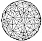

Fig. 986.471
|
986.471
 A series of considerations leads to the definition
of the most spherical-
appearing limit of triangular subdivisioning:
A series of considerations leads to the definition
of the most spherical-
appearing limit of triangular subdivisioning:
- recalling that the experimentally demonstrable "most
spherically-appearing"
structure is always in primitive reality a polyhedron;
- recalling that the higher the modular frequency
of a system the more spheric it
appears, though it is always polyhedral and approaching
not a "true sphere"
limit but an unlimited multiplication of its polyhedral
facetings;
- recalling that the 120 outer surface triangles of
the icosahedron's 15 great
circles constitute the cosmic maximum limit of system-surface
omni-triangular-
self-subdivisioning into centrally collected tetrahedron
components; and
- recalling that the icosahedron's 10- and 6-great-circle
equators of spin further
subdivide the 15 great circles' outer 120 LCD triangles
into four different right
triangles, ADC, CDE, CFE, and EFB (see Fig.
901.03),
then it becomes evident that the icosahedron's three
sets of symmetrical greatcircle
spinnabilities__i.e., 6 + 10 + 15 (which totals 31 great
circle self-halvings)__generate a
total of 242 unit-radius, external vertexes, 480 external
triangles, and 720 internal triangles
(which may be considered as two congruent internal triangles,
each being one of the
internal triangular faces of the 480 tetrahedra whose
480 external triangular faces are
showing-in which case there are 1440 internal triangles).
The 480 tetrahedra consist of
120 OCAD, 120 OCDE, 120 OCEF, and 120 OFEB tetrahedra.
(See Fig.
986.471.) The
480 internal face-congruent tetrahedra therefore constitute
the "most spheric-appearing"
of all the hemispheric equators' self-spun, surface-subdividing
entirely into triangles of all
the great circles of all the primitive hierarchy of
symmetric polyhedra.
|